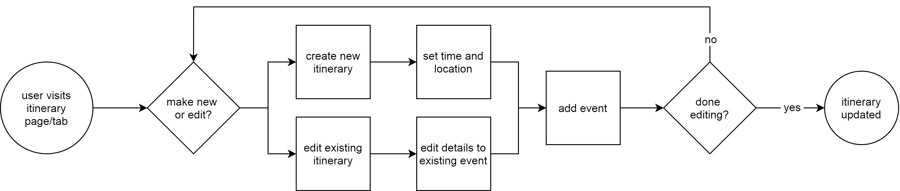

The Wander Project wants to change how you make itineraries with a responsive website with mobile application capabilities that takes inspiration from social media. Whether it’s wanderlusting, planning a business trip, a staycation, or a trip abroad, we get there are different circumstances for each trip, but no matter what stage of planning you’re at, the Wander Project has everything you need to make it your best trip ever! As an avid adventurer, I was happy to help with the design and development process.
Proposal
I was brought on to help design a new application for Cloud storage and organization and to be able to combine it with collaboration. The application had to be able to save and organize content, and be able to collaborate or social share.
Problem & Solution
I wanted to create an application that made trip planning easier. Trip planning can be overwhelming, whether it’s for yourself, a business trip, or for a group of people. I wanted to create an application that centralized everything from finding inspiration and doing research to finalizing a coherent itinerary.
Programs
//Figma
//Illustrator
Research
First I conducted a survey to see how the general consensus used cloud storage and their trip planning experience. Unsurprisingly, I found that more than 63% of users use cloud storage at least 1-2 times a week, if not everyday. I also found out that the most frustrating thing people have with planning trips is that their browser gets too cluttered.
I also conducted a competitive analysis between Pinterest, a cloud storage app, and Google Trips, a trip planning app, to compare and contrast the strengths and weaknesses in existing applications. With Pinterest, I really liked the social feed aspect of it, and it is a very visual based app. Users are able to easily organize their “pins”, or saved media, and multiple people are able to collaborate on one “board” or project. With Google Trips, the only promising factor was its ability to sync reservations from Google Mail, but otherwise it was just a basic itinerary making app, with a small selection of guides and suggestions for where you were going. I really wanted to combine the two, as we often find inspiration from social media, and take into account of existing reviews.
With the information I gathered, I found that the problem was that users often find their browsers cluttered with open tabs. Not to mention that planning can take multiple days, and the user might forget what they were looking at, or would need to reopen all saved tabs. Also, if you’re traveling with more than one person, it can be hard to agree on a set itinerary.
I decided that the best solution would be a trip planning app that uses cloud storage. Not only does it keep all points of interest in a centralized place, it’s easy to save and organize no matter what stage of planning the user is at. It’s easier to collaborate with others if everybody is using the same platform and of course, with desktop to mobile phone compatibility, it’s easy to pull up the itinerary when you’re traveling, and make adjustments to it since not everything always goes as planned.
With these people in mind, I created a list of tasks I wanted the app to be able to perform, and rated their importance from High to Low. Some of the higher importance tasks included: being able to create an account and sign in, creating an itinerary, uploading internal and saving external media files, collaborating with other users, and mapping out points of interest. First I created a Site-Map which was the general blueprint of how the website would operate. Then I created flow charts for the paths a user would have to take in order to perform the high-importance tasks.
User Flows
While there are a lot of things that needed to be implemented, the most important of the user flows would be the “organizing and adding media” flow. Much like Pinterest, the Wander Project lets the user “import” media from websites such as Instagram, Facebook, and Yelp, or directly upload from the users’ computer. However, unlike Pinterest, we added another layer of information where the user can input the address. If the user is still in the beginning stages of planning, all the information for that location is ready for when they would like to integrate it into their itinerary. This keeps everything centralized and organized while minimizing the clutter that comes with planning.
With the user flows planned out, I was able to start building the wireframe for the desktop website. I started ideating on paper, trying to get a general feel of what the website should look like, and to make sure all my frames checked off all the tasks of the flow chart. After that, it was easy to transfer my drawings onto Figma.

Wireframing & Usability Testing
With the basic structure built, it was time to conduct my first usability test to make sure everything was being perceived as it was intended. The most major feedback I got back was the sizing issues in the pop up leaves, how big the font was, and there was a big dislike for how I oriented the friends’ feed and the explore section next to each other. Other feedback I got included fixing buttons that were slightly unclear, and maybe including an internal messaging system to coincide with the collaboration and social media aspect to it.
Branding
Before I started building on top of the wireframes, I had to decide on a brand name and logo. I started off with possible names by using word play with travel-esque words. I finally decided on The Wander Project, which to me perfectly describes what making an itinerary is. Next up was creating a logo. I sketched out icons that portrayed travel or exploration, such as airplanes, compasses, and maps. I decided on the compass because I liked the circular aspect of it and iterated logos playing around with the words and shape of the compass.
With those finalized, I wanted to make sure everything was consistent with one another before “dressing up” the wireframe. I first decided on a color scheme and started looking for inspiration to create a moodboard and decided to model it after the ocean. I felt that most of my favorite places to travel have some sort of body of water and the ocean always gave me wanderlust and a sense of adventure, which is how I wanted the user to feel when planning for their trip. I also wanted it to be minimalistic and calming, since planning a trip can be stressful enough. I also didn’t want the user to be overwhelmed with an overload of information, so I wanted it to be visual-based.
Creating a style guide, or a set of standards allowed me to make sure I didn’t have slightly different versions of the same color, or font that kept on changing as you scrolled through the website and mobile app. The most important guidelines included standards for the logo and colors, and the typeface.
With a style guide established, I built the first working prototype. These are a few of my favorite pages: the landing page after you log-in, your itinerary with a map view, and your list of itineraries.
But before I conducted another round of usability testing, I had a few issues with the design. There were a few places where I was unsure if my design properly showcased what I wanted to convey to the audience, so I conducted a series of preference testing that looked at everything from borders, spacing, colors, and alternating images. I wanted to make sure my design was not only aesthetically pleasing, but also functioned properly as well.
After implementing the preferred stylizing, I conducted another round of usability testing which gave me really good feedback on small details that I needed to pay more attention to. I had disclosed to the testers that although this app was a tool, it was also meant to be a social media app. While they agreed it reads more like a social feed, they wanted to see more aspects of it, like being able to like and comment on a place, or seeing who posted it. They also pointed out that I was missing key options such as being able to choose the TIME as well the date when adding a stop to the itinerary, having “coming up” and “past” sections in the itineraries page, and being able to create different folders in the media page. Other things included being able to share the itinerary to other users, instead of only being able to collaborate. Otherwise, the general consensus was that they loved how easy it and aesthetically pleasing the mobile application came out.
Gathering the feedback, I was able to address the issues I thought were most important, and made sense to correct, and created my final prototype.
Conclusion
I am really happy with the end prototype for this project, but also see areas which can be improved on. Although I have worked on concept projects before, this was the one where I learned the importance of usability testing. I knew what I wanted to convey to the user, but I didn’t realize that my intended designs can be conveyed differently by the potential audience; getting feedback from various people made my project stronger. I always knew what aspects I wanted to implement, but it’s the little things that I didn’t catch which makes usability testing so important.